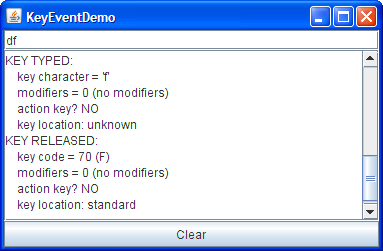

Key events tell you when the user is typing at the keyboard. Specifically, key events are fired by the component with the keyboard focus when the user presses or releases keyboard keys. For detailed information about focus, see How to Use the Focus Subsystem.
Note: For reacting in a special way to particular keys, you usually should use key bindings instead of a key listener. For further information, see How to Use Key Bindings.You can be notified about two basic kinds of key events: the typing of a Unicode character, and the pressing or releasing of a key on the keyboard. The first kind of event is called a key-typed event. The second kind is either a key-pressed or key-released event.
In general, you should try to handle only key-typed events unless you need to know when the user presses keys that don't correspond to characters. For example, if you want to know when the user types some Unicode character — whether as the result of pressing one key such as 'a' or from pressing several keys in sequence — you should handle key-typed events. On the other hand, if you want to know when the user presses the F1 key, or whether the user pressed the '3' key on the number pad, you need to handle key-pressed events.
Note: To fire keyboard events, a component must have the keyboard focus.To make a component get the keyboard focus, follow these steps:
- Make sure the component's
isFocusablemethod returnstrue. This allows the component to receive the focus. For example, you can enable keyboard focus for aJLabelby callingsetFocusable(true)on the label.- Make sure the component requests the focus when appropriate. For custom components, you'll probably need to implement a mouse listener that calls the
requestFocusInWindowmethod when the component is clicked.You can obtain detailed information about a particular key-pressed event. For example, you can query a key-pressed event to determine if it was fired from an action key. Examples of action keys include Copy, Paste, Page Up, Undo, and the arrow and function keys. As of release 1.4, you can also query a key-pressed or key-released event to determine the location of the key that fired the event. Most key events are fired from the standard keyboard, but the events for some keys, such as Shift, have information on whether the user pressed the Shift key on the left or the right side of the keyboard. Likewise, the number '2' can be typed from either the standard keyboard or from the number pad.
Version note: This page reflects the focus API introduced in released 1.4. As of that release, the focus subsystem consumes focus traversal keys, such as Tab and Shift Tab. If you need to prevent the focus traversal keys from being consumed, you can callon the component that is firing the key events. Your program must then handle focus traversal on its own. Alternatively, you can use acomponent.setFocusTraversalKeysEnabled(false)KeyEventDispatcherto pre-listen to all key events. The focus page has detailed information on the focus subsystem.For key-typed events you can get the key character value as well as any modifiers used.
Note: You shouldn't rely on the key character value returned fromgetKeyCharunless it's involved in a key-typed event.The following example demonstrates key events. It consists of a text field that you can type into, followed by a text area that displays a message every time the text field fires a key event. A button at the bottom of the window lets you clear both the text field and text area.

Try this:
- Run KeyEventDemo using JavaTM Web Start. Or, to compile and run the example yourself, consult the example index.
- Type a lowercase 'a' by pressing and releasing the A key on the keyboard.
The text field fires three events: a key-pressed event, a key-typed event, and a key-released event. Note that the key-typed event doesn't have key code information, and key-pressed and key-released events don't have key character information. None of the events so far are from modifier or action keys and the key location, reported on the key-pressed and key-released events, is most likely standard.- Press the Clear button.
You might want to do this after each of the following steps.- Press and release the Shift key.
The text field fires two events: a key pressed and a key released. The text field doesn't fire a key-typed event because Shift, by itself, doesn't correspond to any character.- Type an uppercase 'A' by pressing the Shift and A keys.
You'll see the following events, although perhaps not in this order: key pressed (Shift), key pressed (A), key typed ('A'), key released (A), key released (Shift). Note that Shift is listed as the modifier key for the key-typed and key-pressed events.- Type an uppercase 'A' by pressing and releasing the Caps Lock key, and then pressing the A key.
You should see the following events: key pressed (Caps Lock), key pressed (A), key typed ('A'), key released (A). Note that Caps Lock is not listed as a modifier key.- Press the Tab key. No Tab key-pressed or key-released events are received by the key event listener. This is because the focus subsystem consumes focus traversal keys, such as Tab and Shift Tab. Press Tab twice more to return the focus to the text area.
- Press a function key, such as F3. You'll see that the function key is an action key.
- Press the left Shift key, followed by the right Shift key. The key-pressed and key-released events indicate which Shift key was typed.
- Press the Num Lock key if your keyboard has a number pad.
As for Caps Lock, there is a key-pressed event, but no key-released event.- Press the '2' key on the number pad. You see the key-pressed, key-typed, and key-released events for the number '2'.
- Press the '2' key on the standard keyboard. Again, you see the three event messages. The key-typed events for both number 2 keys are identical. But the key-pressed and key-released events indicate different key codes and different key locations.
- Press the Num Lock key again. A key-released event is fired.
You can find the example's code in
KeyEventDemo.java. Here is the demo's key event handling code:public class KeyEventDemo ... implements KeyListener ... { ...//where initialization occurs: typingArea = new JTextField(20); typingArea.addKeyListener(this); //Uncomment this if you wish to turn off focus //traversal. The focus subsystem consumes //focus traversal keys, such as Tab and Shift Tab. //If you uncomment the following line of code, this //disables focus traversal and the Tab events //become available to the key event listener. //typingArea.setFocusTraversalKeysEnabled(false); ... /** Handle the key typed event from the text field. */ public void keyTyped(KeyEvent e) { displayInfo(e, "KEY TYPED: "); } /** Handle the key pressed event from the text field. */ public void keyPressed(KeyEvent e) { displayInfo(e, "KEY PRESSED: "); } /** Handle the key released event from the text field. */ public void keyReleased(KeyEvent e) { displayInfo(e, "KEY RELEASED: "); } ... protected void displayInfo(KeyEvent e, String s){ ... //You should only rely on the key char if the event //is a key typed event. int id = e.getID(); if (id == KeyEvent.KEY_TYPED) { char c = e.getKeyChar(); keyString = "key character = '" + c + "'"; } else { int keyCode = e.getKeyCode(); keyString = "key code = " + keyCode + " (" + KeyEvent.getKeyText(keyCode) + ")"; } int modifiers = e.getModifiersEx(); modString = "modifiers = " + modifiers; tmpString = KeyEvent.getModifiersExText(modifiers); if (tmpString.length() > 0) { modString += " (" + tmpString + ")"; } else { modString += " (no modifiers)"; } actionString = "action key? "; if (e.isActionKey()) { actionString += "YES"; } else { actionString += "NO"; } locationString = "key location: "; int location = e.getKeyLocation(); if (location == KeyEvent.KEY_LOCATION_STANDARD) { locationString += "standard"; } else if (location == KeyEvent.KEY_LOCATION_LEFT) { locationString += "left"; } else if (location == KeyEvent.KEY_LOCATION_RIGHT) { locationString += "right"; } else if (location == KeyEvent.KEY_LOCATION_NUMPAD) { locationString += "numpad"; } else { // (location == KeyEvent.KEY_LOCATION_UNKNOWN) locationString += "unknown"; } ...//Display information about the KeyEvent... } }
The corresponding adapter class is
KeyAdapter.
Method Purpose keyTyped(KeyEvent) Called just after the user types a Unicode character into the listened-to component. keyPressed(KeyEvent) Called just after the user presses a key while the listened-to component has the focus. keyReleased(KeyEvent) Called just after the user releases a key while the listened-to component has the focus. The
KeyEventclass inherits many useful methods from theInputEventclass, such asgetModifiersEx, and a couple useful methods from theComponentEventandAWTEventclasses. See the InputEvent Class table in the mouse listener page for a complete list.
Method Purpose int getKeyChar() Get the Unicode character associated with this event. Only rely on this value for key-typed events. int getKeyCode() Get the key code associated with this event. The key code identifies the particular key on the keyboard that the user pressed or released. The KeyEventclass defines many key code constants for commonly seen keys. For example,VK_Aspecifies the key labeled A, andVK_ESCAPEspecifies the Escape key.String getKeyText(int)
String getKeyModifiersText(int)Return text descriptions of the event's key code and modifier keys, respectively. Note that the InputEventmethodsgetModifiersExandgetModifiersExText, introduced in release 1.4, provide more information about the key event thangetModifiers,getKeyText, andgetKeyModifiersText. For this reason, the 1.4 methods are preferred.boolean isActionKey() Return true if the key firing the event is an action key. Examples of action keys include Cut, Copy, Paste, Page Up, Caps Lock, the arrow and function keys. This information is valid only for key-pressed and key-released events. int getKeyLocation() Return the location of the key that fired this event. This provides a way to distinguish keys that occur more than once on a keyboard, such as the two shift keys, for example. The possible values are KEY_LOCATION_STANDARD,KEY_LOCATION_LEFT,KEY_LOCATION_RIGHT,KEY_LOCATION_NUMPAD, orKEY_LOCATION_UNKNOWN. This method always returnsKEY_LOCATION_UNKNOWNfor key-typed events. Introduced in release 1.4.
The following table lists the examples that use key listeners.
Example Where Described Notes KeyEventDemoThis section Reports all key events that occur on a text field to demonstrate the circumstances under which key events are fired.